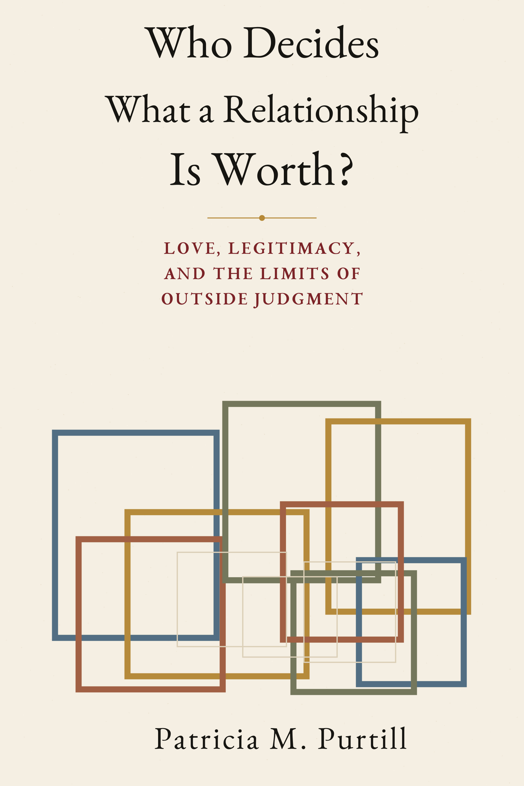

New book · 2026
Who Decides What a Relationship Is Worth?
Love, Legitimacy, and the Limits of Outside Judgment
Who gets to say what a relationship means, whether it counts, and what follows from that judgment? A warm, research-grounded look at how authority gets divided among the people living a relationship and the outsiders with power over it.
Sometimes several people can be right about different parts of the same situation.
View on Amazon →